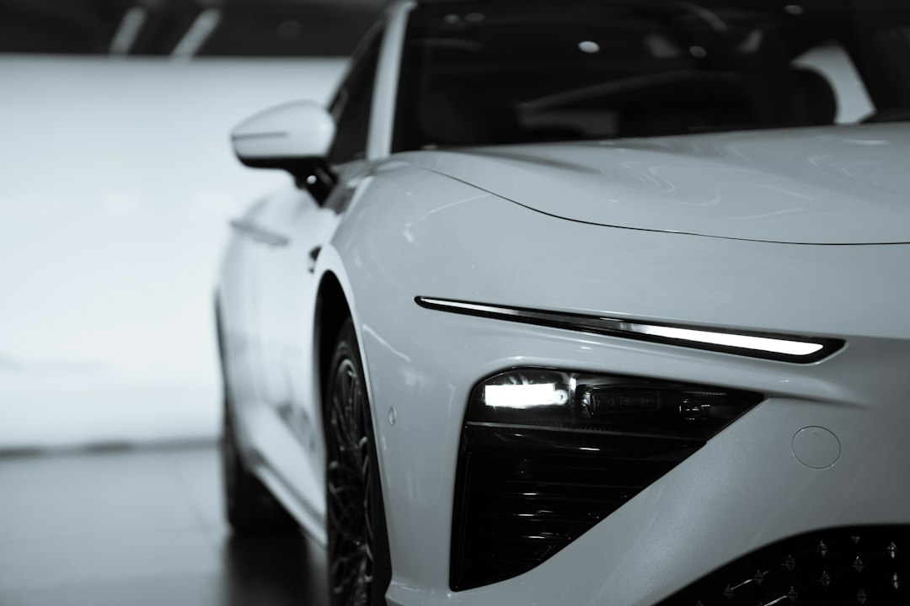

Mercato Auto Elettriche: Il Divario Tecnologico tra Manualità e Automazione nel Settore Automotive

Mercato Auto Elettriche e Automazione: Perché Concessionari e Saloni Usato Devono Evolvere Subito
- Le vendite globali di auto elettriche a ottobre sono salite dell'8% grazie all'effetto trainante della UE.
- Concessionari e professionisti automotive che utilizzano processi manuali rischiano di perdere competitività e visibilità.
- DriveMotion AI di RM Studio trasforma l'immagine degli annunci auto con ambientazioni di lusso e video promozionali automatizzati, aumentando l'attrattività e le conversioni.
Analisi Approfondita della Notizia e delle Implicazioni Operative
Secondo recenti dati di mercato, le vendite globali di auto elettriche (inclusi BEV e PHEV) hanno registrato un incremento dell'8% a ottobre rispetto allo stesso periodo dell'anno precedente, con la spinta principale che proviene dall'Unione Europea. Al contrario, Usa e Cina mostrano una fase di rallentamento che riflette dinamiche economiche e normative divergenti. Questo scenario evidenzia chiaramente come il mercato dell’auto elettrica sia ormai centrale nel settore automotive globale. Tuttavia, oltre all’aspetto di prodotto, assume un’importanza cruciale il modo in cui le aziende del settore – concessionari, saloni dell’usato e professionisti – gestiscono e promuovono la propria offerta.
Le norme ambientali più stringenti e i bonus governativi in Europa creano opportunità commerciali significative, ma solo per chi riesce a distinguersi nell’universo digitale e social, canali fondamentali per la vendita di veicoli usati elettrici e ibridi. In questo contesto, emerge il divario competitivo tra chi mantiene processi manuali e tradizionali – con contenuti poco professionali, sfondi non curati e video assenti – e chi adotta strumenti di automazione digitale avanzata. I primi rischiano di perdere visibilità e, di conseguenza, opportunità di vendita.
Le Conseguenze e i Costi di Non Agire
Le fotografie e i video degli annunci usati spesso rappresentano un collo di bottiglia operativo. Piazzali con sfondi disordinati, auto fotografate in condizioni di luce poco professionali o con elementi distraenti in scena penalizzano la percezione del valore del veicolo. Questo è un problema critico perché gli utenti online, abituati a contenuti visivi di alta qualità, tendono ad ignorare inserzioni con scarsa attrattività. Per i concessionari e saloni che non investono in questa trasformazione, la conseguenza diretta sono conversioni più basse, tempi di permanenza sui veicoli più brevi e una minore redditività complessiva.
Inoltre, i processi manuali per la cura di contenuti promozionali comportano tempi lunghi, costi elevati e dipendenze da risorse esterne non sempre rapide o coerenti. Questo limita la capacità di rispondere tempestivamente al mercato dinamico delle auto elettriche e ibride, soprattutto in un contesto dove la velocità di pubblicazione online e l'impatto visivo sono fattori chiave nel differenziarsi dalla concorrenza.
Come DriveMotion AI Risolve il Problema
RM Studio ha ideato DriveMotion AI, una soluzione SaaS nativamente integrata per concessionari, saloni dell’usato e professionisti automotive che desiderano elevare la qualità degli annunci senza appesantire i propri processi. DriveMotion AI automatizza la rimozione degli sfondi dei piazzali eterogenei e poco attrattivi, sostituendoli con ben 10 scenari virtuali di lusso, studiati appositamente per valorizzare ogni vettura.
Tra le ambientazioni disponibili troviamo showroom esclusivi, loft contemporanei e suggestivi set notturni cyberpunk, tutti capaci di dare un’immediata percezione premium ai potenziali clienti. Inoltre, DriveMotion AI genera video promozionali in HD, con voce narrante professionale integrata, ottimizzati per i canali social più importanti come Facebook, Instagram e LinkedIn. Il risultato è una comunicazione molto più efficace che aumenta engagement, lead generation e – in ultima analisi – vendite.
Il SaaS è offerto in pacchetti flessibili Pay-As-You-Go a partire da soli €14.90 per video, consentendo di sperimentare senza rischi e scalare l’investimento in base ai risultati. Questo modello consente a concessionari di ogni dimensione di adottare una tecnologia di frontiera, superando il divario competitivo che separa chi resta ancorato a metodi tradizionali da chi investe nell’automazione digitale di nuova generazione.
| Caratteristica | Gestione Tradizionale | Con DriveMotion AI |
|---|---|---|
| Qualità sfondo | Piazzale non curato con elementi distraenti | Sfondo premium in 10 ambientazioni di lusso |
| Tempo di preparazione contenuti | Giorni/settimane, risorse esterne | Automatizzato in pochi minuti |
| Video promozionali | Spesso assenti o amatoriali | Generati con voce narrante professionale |
| Costo medio | Alti costi fissi e servizi esterni | Pacchetti Pay-As-You-Go da €14.90 |
| Impatto sulle conversioni | Limitato da scarsa attrattività visiva | Incremento significativo engagement e vendite |
💡 Ti è stato utile questo approfondimento?
Condividilo con un collega o un amico del settore Concessionari Auto, Saloni Usato e Professionisti Automotive a cui potrebbe interessare!
FAQ - Domande Frequenti per Professionisti Automotive
1. Quali sono i principali vantaggi di DriveMotion AI rispetto alla fotografia tradizionale?
DriveMotion AI elimina il problema di sfondi caotici o poco professionali e offre ambientazioni visive di lusso, incrementando drasticamente il valore percepito dei veicoli e abbattendo i tempi di produzione contenuti.
2. È complicato utilizzare DriveMotion AI senza competenze tecniche specifiche?
No, l’interfaccia della piattaforma è intuitiva e progettata per i professionisti automotive, con procedure guidate per il caricamento foto e la generazione automatica dei video promozionali.
3. Come si integra DriveMotion AI nelle campagne social già esistenti?
La piattaforma produce video ottimizzati per tutti i maggiori social network con formati e risoluzioni ideali, facilitando la pubblicazione diretta e migliorando engagement e conversioni senza necessità di ulteriori editing.
Inizia Subito
Pacchetti Pay-As-You-Go da €14.90 per video promozionali HD.
Fonti Ufficiali e Risorse Esterne
Scopri l'Intelligenza Artificiale per la tua attività
Ottimizza i processi e aumenta le vendite con le soluzioni B2B di RM Studio.
Scopri DriveMotion AI